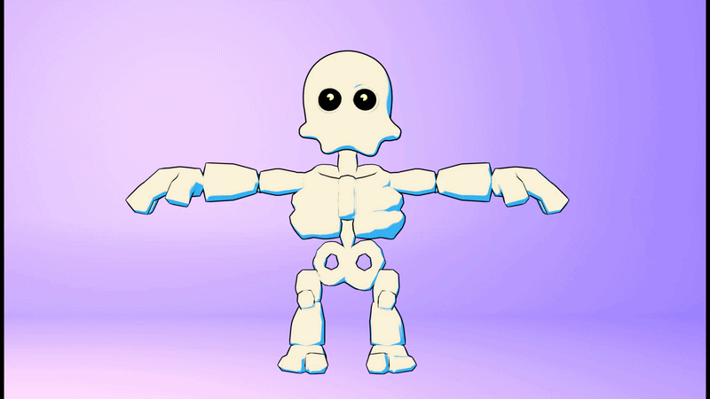
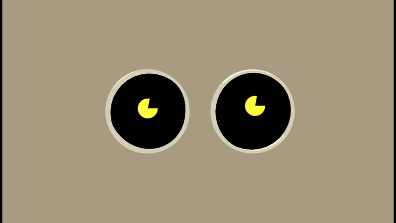
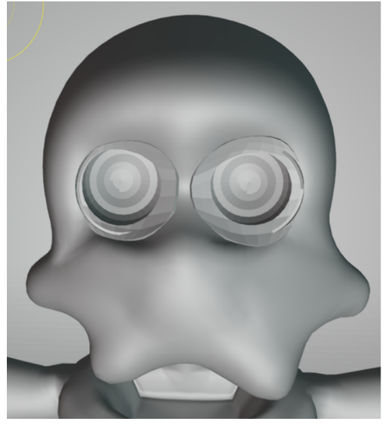
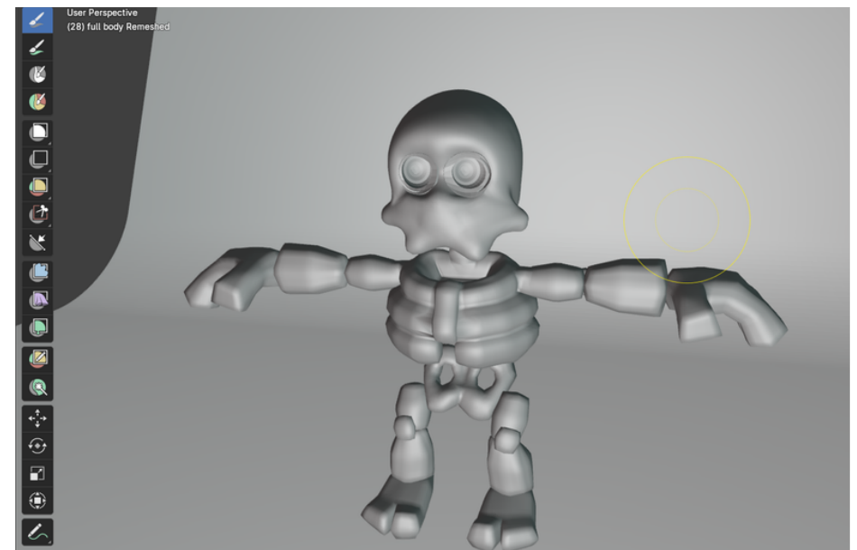
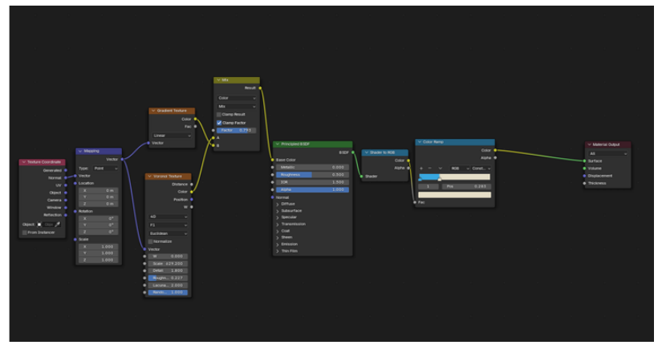
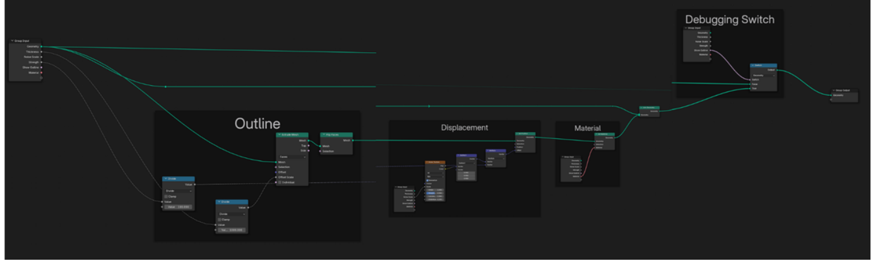
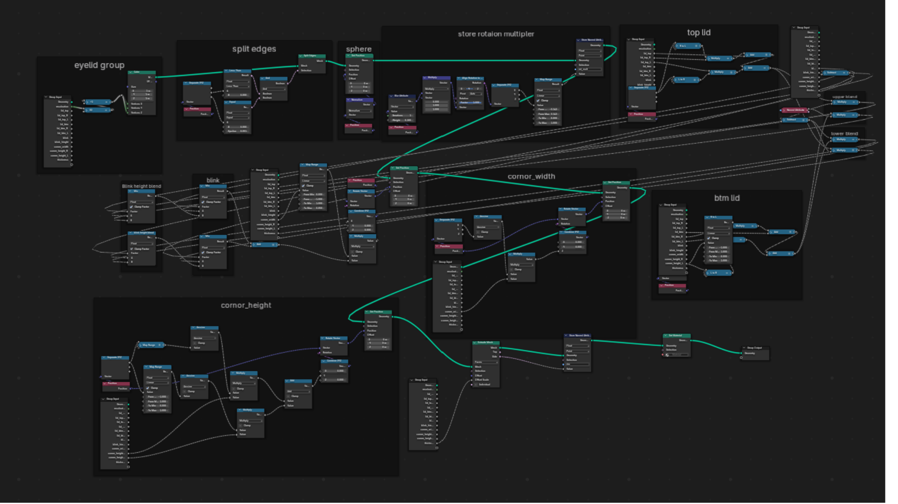

A stylised skeleton character, sculpted and rigged with a custom watercolour-style shader and a fully procedural eye rig.
← Back to homeCharacter turnaround and rig demo

Sculpted skeleton character

Procedural eye rig — blink and eye movement
I wanted to create a unique character with a range of expressions, but with a familiar touch. I chose a skeleton design since there have been so many, but I gave it a non-human shape to differentiate it. Also decided not to give it a mouth, so all the expressions will be through the body and eyes.


I used Geometry Nodes to create a soft, organic pattern that mimics how watercolour spreads. By blending gradients with noise, I added natural variation and smooth colour transitions to get a diffused, hand-painted look. I also added a custom outline modifier using nodes, which gives me control over the edges and helps enhance the overall watercolour style.


It's a procedural eye rig designed to automatically shape and animate the eyeball and eyelids using a small set of intuitive controls. This allows for natural blinking, eye movement, and eyelid deformation without the need for extensive manual sculpting or individual keyframing. The procedural setup helps maintain consistency throughout the animation while making the rig easy to adjust, modify, and reuse across different characters or models. Another major advantage is that the system updates cleanly when the underlying model or geometry changes, making the workflow faster, more flexible, and more efficient than creating and animating every movement by hand.
Alongside rigging and procedural animation, I have a strong understanding of Geometry Nodes in Blender and am comfortable creating complex procedural setups, Geometry Nodes-based animations, and custom materials. I can use Geometry Nodes to generate and manipulate geometry dynamically, create controlled procedural effects, and develop animations that respond to different parameters or inputs. I'm also comfortable experimenting with and building custom materials and shader setups, allowing me to combine procedural geometry, animation, and materials into cohesive and adaptable systems.
